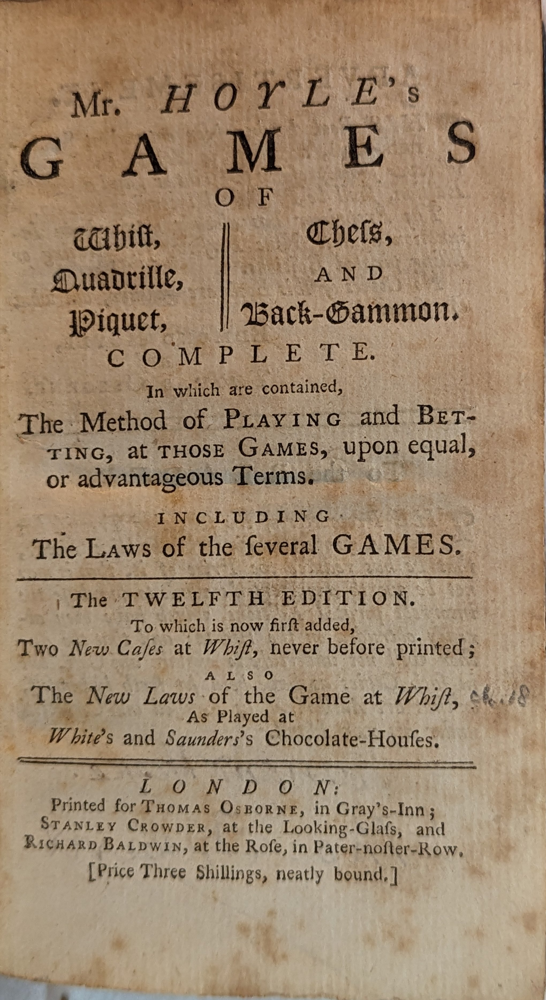

A Descriptive Bibliography of Edmond Hoyle
Copyright © 2014-26 by David Levy
(page updated 2026-01-30)User Guide
Games.3
Mr. Hoyle's Games, printed for Thomas Osborne et al, third London edition, “twelfth” edition, 1760.
 |
Title: | Mr. HOYLE's | GAMES | OF | [3 lines to left of double rule] Whiſt, | Quadrille, | Piquet, | [3 lines to right of double rule] Cheſs, | AND | Back-Gammon. | COMPLETE. | In which are contained, | The Method of Playing and Bet-|ting, at those Games, upon equal, | or advantageous Terms. | INCLUDING | The Laws of the ſeveral GAMES. | [rule] | The TWELFTH EDITION. | To which is now firſt added, | Two New Caſes at Whiſt, never before printed; | ALSO | The New Laws of the Game at Whiſt, | As Played at | White's and Saunders's Chocolate-Houſes. | [double rule] | LONDON: | Printed for Thomas Osborne, in Gray's-Inn; | Stanley Crowder, at the Looking-Glaſs, and | Richard Baldwin, at the Roſe, in Pater-noſter-Row. | {Price Three Shillings, neatly bound.} |
| Collation: | 12o: π1 A6 B–I12 K8 L2 χ1 [$1–5 (−A4,5,K5) signed]; 114 leaves, pp. [2 ] i–x, [2 ] [1] 2–86 [87–89] 90–115 [116–119] 120–152 [153] 154–168 [169–171] 172–214 [misprinting i as 1] |
| Section Title Whist | A SHORT | TREATISE | On the GAME of | WHIST. | CONTAINING | The LAWS of the GAME: | AND ALSO | Some Rules, whereby a Beginner may, with due | Attention to them, attain to the Playing it well. | Calculations for thoſe who will Bet the Odds on any | Points of the Score of the Game then playing and | depending. | Cases ſtated, to ſhew what may be effected by a very | good Player in Critical Parts of the Game. | References to Cases, viz. at the End of the Rule, | you are directed how to find them. | Calculations, directing with moral Certainty, how to | play well any Hand or Game, by ſhewing the Chances | of your Partner’s having 1, 2, or 3 certain Cards. | With a Variety of Cases added in the Appendix. | [rule] | By Edmond Hoyle, Gent. | [rule] | The Laws of the Game, and an Explanation of the Cal-|culations which are neceſſary to be underſtood by thoſe | who would play it well. | AND ALSO, | A Dictionary for WHIST, which reſolves | almoſt all the critical Caſes that may happen at | the Game. | To which is added, | An ARTIFICIAL MEMORY: | Or, an eaſy Method of aſſiſting the Memory of | thoſe that play at the Game of WHIST. | And ſeveral Cases, not hitherto publiſhed. |
| Section Title Quadrille | [row of type orn] | A SHORT | TREATISE | On the GAME of | QUADRILLE; | SHEWING | The Odds of winning or loſing moſt GAMES | that are commonly played; either by calling | a King, or by playing Sans Prendre. | To which are added, | The LAWS of the GAME. | The Fourth Edition. | By Edmond Hoyle, Gent. | [row of type orn] |
| Section Title Piquet and Chess | [row of type orn] | A SHORT | TREATISE | On the GAME of | PIQUET; | DIRECTING, | With moral Certainty, how to diſcard any | Hand to Advantage, by ſhewing the Chances | of taking in any one, two, three, four, or | five certain Cards. | Computations for thoſe who Bet their | Money at the Game. | ALSO | The LAWS of the GAME. | To which are added, | Some Rules and Observations for play-|ing well at CHESS. | The Fourth Edition. | By Edmond Hoyle, Gent. | [row of type orn] |
| Section Title Backgammon | [row of type orn] | A SHORT | TREATISE | On the GAME of | BACK-GAMMON. | CONTAINING | [12 lines to left of double rule] A Table of the thirty-ſix | Chances, with Directions | how to find out the Odds | of being hit, upon ſingle, | or double Dice. | Rules whereby a Beginner | may, with due Attention | to them, attain playing it | well. | The ſeveral Stages for car-|rying your Men home, in | order to loſe no Point. [12 lines to right of double rule] How to find out who is for-|wardeſt to win a Hit. | Caſes ſtated for Back-games, | with Directions how to | play for one. | Caſes ſtated, how to know | when you may have the | better of ſaving a Gam-|mon by running. | Variety of Caſes of Curioſity | and Inſtruction. | The Laws of the Game. | The Fifth Edition. | By Edmond Hoyle, Gent. | [row of type orn] |
| Contents: | Signature (Page) Reference | Contents | Signature (Page) Reference | Running Titles |
| π1r | title | |||
| π1v | ‘ADVERTISEMENT. | [...] | To the READER. | [...] | [autographs of Edmond Hoyle and Thomas Osborne]’ | |||
| A1r–A5v (i–x) | ‘[double rule] | The | CONTENTS. | [...]’ | A1v–A5v (ii–x) | ‘The CONTENTS.’ | |
| A6r | section title whist | |||
| A6v | blank | |||
| B1r–E7v (1–86) | ‘[double rule] | A SHORT | TREATISE | On the GAME of | WHIST. | [...]’ | B1v–E7v (2–86) | ‘A ſhort Treatise on | the Game of WHIST.’ | |
| E8r (87) | section title Quadrille | |||
| E8v (88) | blank | |||
| E9r–F10r (89–115) | ‘[double rule] | A SHORT | TREATISE | On the GAME of | QUADRILLE. | [...]’ | E9v–F10r (90–115) | ‘A ſhort Treatise on the | Game of QUADRILLE.’ | |
| F10v (116) | blank | |||
| F11r (117) | section title Piquet and Chess | |||
| F11v (118) | blank | |||
| F12r–H4v (119–152) | ‘[double rule] | A | TREATISE | On the GAME of | PIQUET. | [...]’ | F12v–H4v (120–152) | ‘A Treatise on PIQUET.’ | |
| H5r–H12v (153–168) | ‘[double rule] | SOME | Rules and Observations | FOR | Playing well at CHESS. | [...]’ | H5v–H12r (154–167) | ‘Rules and Observations | for Playing at CHESS.’ | |
| H12v (168) | ‘Rules and Observations, &c.’ | |||
| I1r (169) | section title Backgammon | |||
| I1v (170) | blank | |||
| I2r–L2v (171–212) | ‘[double rule] | A SHORT | TREATISE | On the GAME of | BACK-GAMMON. | [...]’ | I2v–L2r (172–211) | ‘A ſhort Treatise on the | Game of BACK-GAMMON.’ | |
| L2v (212) | ‘A ſhort Treatise, &c.’ | |||
| on L2v (212) | errata | |||
| χ1r–χ1v (213–214) | ‘[row of type orn] | Two New CASES at WHIST, | Added ſince this Book was printed off. | [...]’ | |||
| on χ1v (214) | errata |
| Catchwords: | A5r(ix) another [Odds,]; H1v(146) III [III.] |
| Publisher: | Thomas Osborne, James Hodges, Richard Baldwin |
| Notices: | 1760-12-19 Public Advertiser: "Next week will be published, beautifully printed on a fine paper, in a small genteel
pocket volume, price only 3s. neatly bound, the twelfth edition. To which is added
two cases in whist never printed before; and the new laws of the game, as played at
White's and Saunders's Chocolate Houses. Mr. Hoyle's Games compleat...Be please to
observe what you buy are signed by Mr Hoyle and T. Osborne, all others being pirated,
or a bad edition for which a reward is given to any who will inform of the sale of
them." 1760-12-23 London Evening Post: "This day were publish'd..." |
| Price: | 3s. (title, advertisement) |
| References: | ESTC T88035, Horr 657, Jessel 804 (without separate entries for this book and the various piracies) , Marshall s7 no.9 p25 (1890-01-11), Rather 41 (without separate entries for this book and the various piracies) |
| Copies Seen: | L [7913.aaa.23] (ECCO) (Google); O [Jessel f.556]; O [Murray f.22]; CLU-SC [GV1241.H85g 1760]; DLC [GV1277.H89 1761]; NvLN [GV1241.H69 1761?]; NvLN [GV1277.H89 1761]; PPL [Iu Hoyl Game 1765]; Levy [1118]; Levy [1373]; Levy [1825] |
| Other Copies: | CU-SB [SpC GV1241.H6]; CaOONL [GV1241.H6 1760]; CaOTU [B-11.8800]; CtY-BR [NLp57 760H]; MSaP [GV1241.H695 1790]; NjP [2005-2413N] |
| Notes: | Although Stanley Crowder appears on the imprint, James Hodges still owned a one-third share of the copyright, as did Osborne and Baldwin. Hodges left the book trade in 1757 and sold his stock of physical books at a trade sale on 1757-07-14. His copyrights were not sold until a second trade sale on 1763-04-21. Crowder, an apprentice of Hodges, carried on the business at the sign of the Looking Glass near London Bridge. Crowder appears on the imprint to let the public and retail booksellers know where they might obtain copies of the book. Crowder was in effect a trade publisher. See the essay "The Hoyle Copyright in Hoyle's Lifetime (revisited)". There are three printings of another "twelfth" edition which are not autographed by Hoyle and Osborne and which are piracies. See Games.3.P.1, Games.3.P.2, and Games.3.P.3. Both O [Murray f.22] and DLC [GV1277.H89 1761] lack the title page π1 and have the section title for whist, A6, bound in front as a title. |